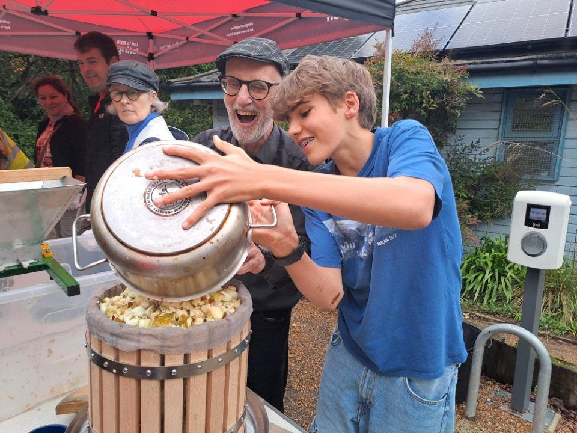
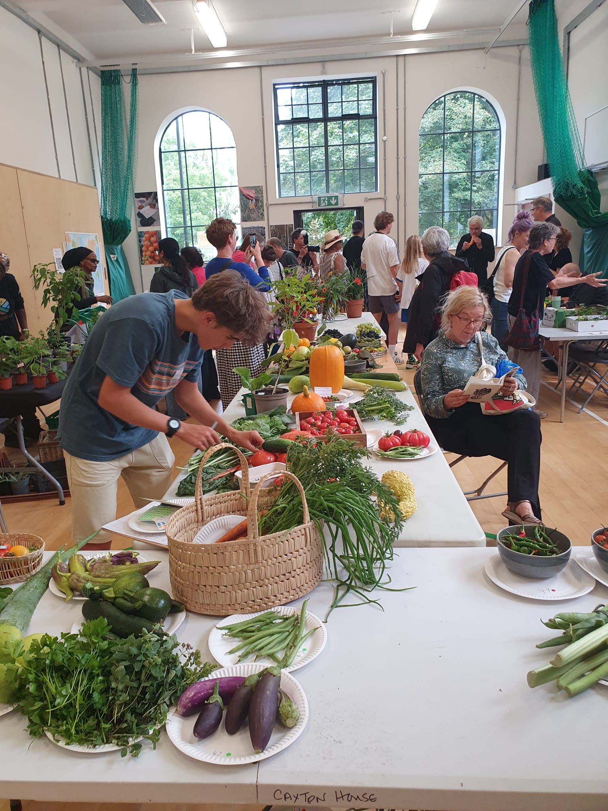
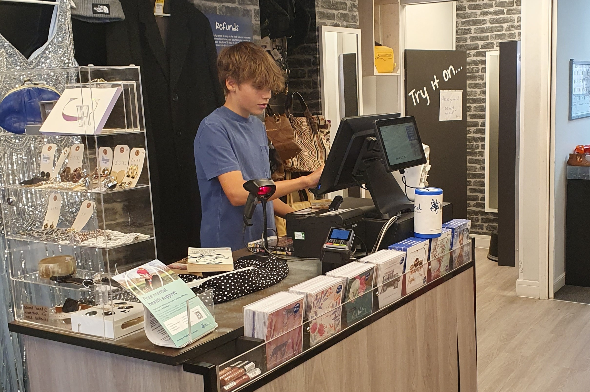

Volunteering
I've be able to volunteer many times in my local area, including for DofE and at many Islington Council events.
Where I've enjoyed volunteering!
- Islington Council Parks
- I have made many friends within the Islington Council Parks Team, and am lucky to get invited to many of their great events as a volunteer.
- These events include the Islington Grow Show, Apple Day at Gillespie Park and the Spring Festival at the same place.
- Because of this, I occasionally end up in the Islington Gazette, Islington Life newsletter (see the post) and council newsletter.
- I also made a website for The Friends Group of St John's Garden, help advertise their presence to locals. They are a fantastic friend group who are managing to make the most out of the little green space the area has. You can check out the website here.

Apple Day at Gillespie Park, making apple juice by pressing apples

Cataloguing entries at the Islington Grow Show
- Mind Charity Shop
- I found a position at my local Mind charity shop.
- I was able to contribute to a charity that supports so many people whilst working at Mind and, at the same time, learning many skills like customer service and stocking/logistics.

Me on the till at my local Mind charity shop